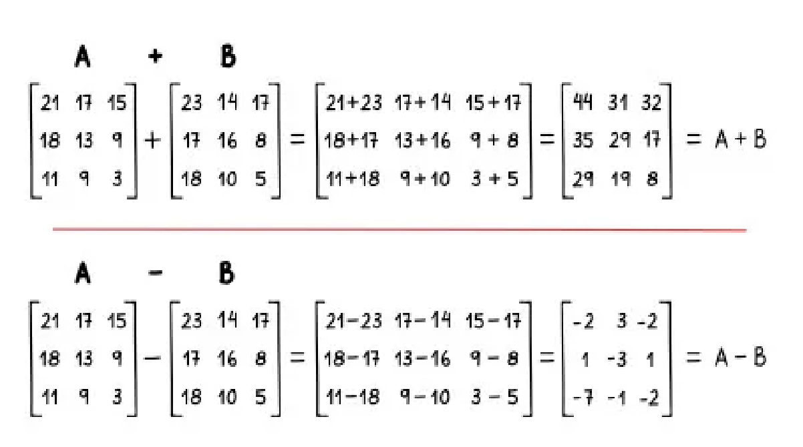

Durante o 2º ano, tivemos a oportunidade de realizar um trabalho marcante com o professor Maycon, nosso professor de matemática da época. Ele solicitou que o nosso grupo elaborasse uma apresentação sobre multiplicação, soma e divisão de matrizes, temas fundamentais dessa área do conhecimento.
Essa atividade foi especialmente importante, pois não se limitou ao aprendizado teórico; ela nos incentivou a explorar conceitos, resolver problemas e entender a aplicação prática das matrizes no cotidiano. Além disso, o trabalho despertou em nós uma curiosidade genuína pela matemática, ajudando a transformar o que antes parecia complexo em algo fascinante. Essa experiência foi um marco para nossa relação com a disciplina, mostrando como ela pode ser desafiadora, mas ao mesmo tempo instigante.
Trabalhar em equipe também tornou o processo mais enriquecedor, já que pudemos compartilhar ideias e aprender juntos. Sem dúvida, foi uma atividade que impactou positivamente nosso interesse pela matemática.
Segue uma imagem sobre matrizes para representar a atividade mencionada:
